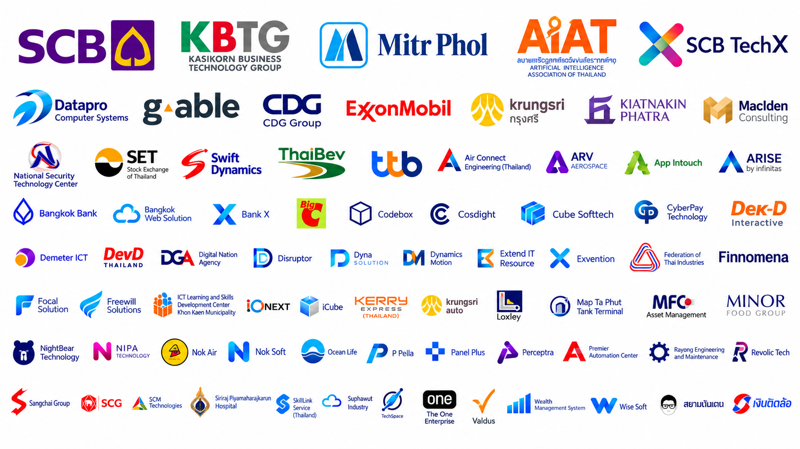

Agentic AI for Security Operations Center
Organization: Cybersecurity / enterprise technology
An agentic-AI approach to assist security-operations workflows, investigation steps and analyst decision support.
ข้อมูลการเรียนรู้ร่วมกับการทำงาน CSS 495 ความคาดหวังของโครงงาน สถิติโครงงาน และตัวอย่างโครงงานจริงโดยไม่เปิดเผยชื่อองค์กรพันธมิตร
โครงงานอาจเป็นงานที่บริษัทพัฒนาให้ลูกค้าหรือใช้ภายในองค์กร อาจเป็นส่วนหนึ่งของหน้าที่ที่ได้รับมอบหมายหรือเป็นโครงงานเพิ่มเติม โดยส่งเสริมการทำงานเป็นทีม รวมถึงการร่วมทีมกับนักศึกษาจากสถาบันอื่น และต้องระบุบทบาทของนักศึกษาแต่ละคนให้ชัดเจน
นักศึกษาได้สัมผัสการทำงานจริงก่อนเข้าสู่เส้นทางการเรียนรู้กับอุตสาหกรรมในชั้นปีสุดท้าย
นักศึกษากำหนดหัวข้อ วัตถุประสงค์ ขอบเขต และความรับผิดชอบ
นักศึกษาทำงานจริงที่มีความหมายร่วมกับองค์กร โดยควรทำงานเป็นส่วนหนึ่งของทีม
นักศึกษาดำเนินโครงงานให้เสร็จ นำเสนอ และจัดทำรายงานผลลัพธ์
สอบหัวข้อและสอบปลายโครงงาน พร้อมส่งข้อเสนอโครงงานและรายงาน
อาจารย์ที่ปรึกษา พี่เลี้ยงจากบริษัท และคณะกรรมการสอบของหลักสูตรร่วมประเมินวัตถุประสงค์ ผลงาน บทบาท การมีส่วนร่วม การนำเสนอ และการตอบคำถาม
อาจารย์ที่ปรึกษาเยี่ยมติดตามอย่างน้อย 1 ครั้ง โดยเยี่ยม ณ สถานประกอบการ เว้นแต่การปฏิบัติงานเป็นออนไลน์ทั้งหมด
สถิติประเภทโครงงานจากข้อมูลรายวิชา CSS 495
| ประเภทโครงงาน | 2566 | 2567 | 2568 | 2569 | รวม |
|---|---|---|---|---|---|
| Full-Stack Software (Web, Mobile) Development | 16 | 15 | 13 | 13 | 57 |
| Software Testing & QA | 4 | 3 | 9 | 13 | 29 |
| AI / Data Science / ML | 4 | 6 | 8 | 5 | 23 |
| UX/UI & Front-end | 6 | 7 | 5 | 1 | 19 |
| Cybersecurity | 0 | 1 | 5 | 4 | 10 |
| Low-Code / Workflow / Automation | 0 | 3 | 2 | 0 | 5 |
| Cloud / DevOps / Infrastructure | 2 | 0 | 2 | 1 | 5 |
| Game Development | 0 | 2 | 1 | 1 | 4 |
| IoT / Smart System / Robotics | 1 | 0 | 1 | 1 | 3 |
ตัวอย่างองค์กรที่มีความร่วมมือกับกิจกรรมการเรียนรู้ร่วมกับการทำงานของ ACS ในช่วงที่ผ่านมา

ตัวอย่างหัวข้อโครงงาน WiL จริงจากนักศึกษารุ่นล่าสุด โดยไม่แสดงชื่อบริษัท และแสดงเฉพาะประเภทธุรกิจและขนาดขององค์กรพันธมิตร
An agentic-AI approach to assist security-operations workflows, investigation steps and analyst decision support.
A RAG-based AI hub that connects organizational knowledge sources with conversational retrieval and assistance.
A computer-vision screening prototype that analyzes retinal fundus images to support glaucoma-related assessment.
A web-based validation workflow that automates checks on files used in core-banking processes and reduces manual verification.
A centralized web interface for launching, managing and reviewing Robot Framework automated test executions.
A software-quality project that automates defect reporting and applies data-driven forecasting to help teams monitor defect trends and prioritize follow-up work.
A dashboard integrating operational security-work information to improve visibility, tracking and coordination of cyber activities.
Computer-vision and data-analysis work using RGB drone imagery to assess sugarcane health and support agricultural operations.
A defect-tracking workflow for post-delivery software issues, improving traceability, prioritization and follow-up across teams.
Automated user-interface validation for merchant-onboarding flows to improve test consistency and reduce repetitive manual checks.
Functional and quality-assurance testing for a new capital-market mobile application before wider operational use.
A DevOps-oriented project for improving the scalability and repeatability of Moodle deployment through Infrastructure as Code, automation and modern operational practices.
An AI platform that evaluates project proposals, estimates approval potential and highlights strengths and areas for improvement.
A neural-network based liveness and face-recognition solution designed to reduce reliance on external recognition APIs.
An AI model for faster and more consistent sugarcane quality classification to support operational decision making.
An automation tool that standardizes repeatable steps in mobile-application penetration testing and reduces manual effort.
An automated web-testing solution that improves repeatability, consistency and speed compared with manual regression testing.
A workflow automation project connecting GitLab with Power Automate to reduce repetitive steps and improve continuity across software-development processes.
Deep-learning based classification of people from entrance CCTV footage to support automated monitoring and analysis.
An AI-assisted valuation solution for estimating condominium values in the Bangkok metropolitan area.
A browser-based electronic Know-Your-Customer service supporting digital identity verification workflows.
Enhancement of merchant approval workflows and promotion-related functions for a large digital delivery platform.
A model-based testing project that applies automated test-model generation to improve repeatability and coverage for web applications.
An internal information-system project that centralizes organizational data and supports more consistent access, maintenance and day-to-day operational use.